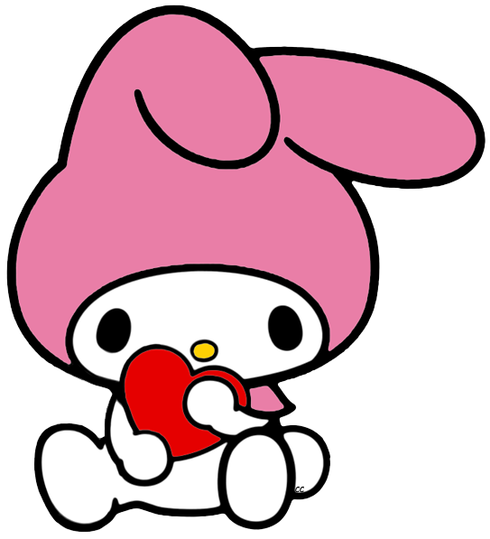

Se não fossem vocês...
Eu queria muito que vocês soubessem o quanto são especiais pra mim. De verdade. Conhecer cada um de vocês, com seus jeitos únicos, suas manias, suas risadas, suas curiosidades aleatórias e até suas implicâncias, foi algo que me salvou de uma forma que talvez vocês nem imaginem.
Eu tenho muitas dificuldades emocionais, lido com depressão e, às vezes, com crises de TDAH que me deixam completamente sem energia. Tem períodos em que eu passo semanas mal, e até coisas simples como levantar da cama ou me alimentar se tornam extremamente difíceis. Nessas fases, eu acabo sumindo, demoro para aparecer ou às vezes nem apareço. Mas nunca é por falta de vontade. Nunca é porque eu não amo estar com vocês. É porque, em alguns momentos, a dor acaba me vencendo, mesmo quando eu quero muito estar presente.
Só que quando eu entro pra jogar com vocês… parece que tudo isso dá uma pausa. É como se, por um tempinho, o peso diminuísse. As risadas, as conversas, as brincadeiras, tudo isso me faz respirar melhor. Vocês são um refúgio pra mim, mesmo sem saber.
Eu aprendi a amar cada um do seu jeitinho. Aprendi a admirar as diferenças, as personalidades, os assuntos aleatórios. Desde as curiosidades sobre judeus com o Nicolas (que sempre rende umas conversas muito boas e inesperadas 😂) até os papos sobre tecnologia com o Junior. Cada momento vira memória. Cada detalhe importa.
Vocês não têm ideia do quanto são significativos na minha vida. Talvez, pra vocês, seja “só um grupo que joga junto”, mas pra mim é muito mais do que isso. É amizade, é apoio, é conforto, é leveza no meio do caos.
Eu sou extremamente grato por ter conhecido todos vocês. E eu sonho, de verdade, em um dia poder conhecer cada um pessoalmente, dar um abraço apertado e agradecer olhando nos olhos.
E principalmente… a minha duozinha, minha metadinha. Nada faz sentido sem você, meu momo. Você é uma parte de mim nesse mundo caótico, e jogar ao seu lado transforma qualquer dia ruim em algo suportável. 🫶
Haruka, Touka, Kaneko, Nick, Andre e Yori… gratidão por tudo. Eu amo todos vocês. É muito bom, muito marcante e muito especial compartilhar momentos com vocês.
Obrigado por existirem na minha vida. 💛
